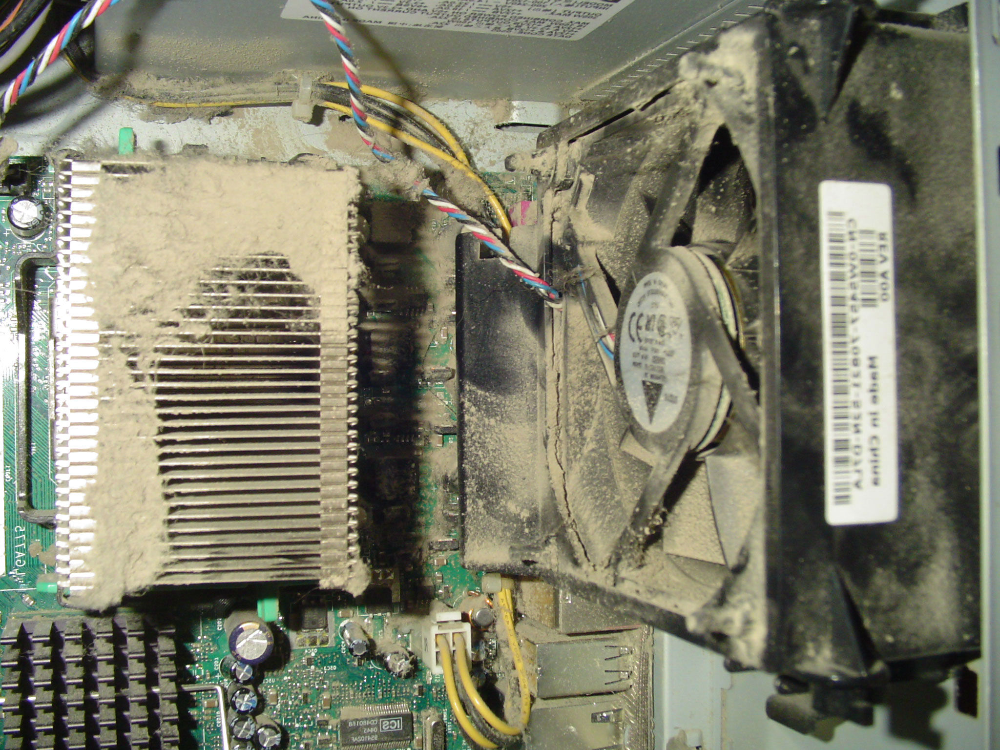

Run Clean
Run CleanWhat We Do
Workplace Computer cleaning and preventive maintenance
In the modern workplace PCs are a significant investment for any enterprise and proper maintenance of existing resources can extend the life of theses resources resulting in significant savings in the long run.
Thorough dust removal of all computers
Dust buildup can cause problems for every system. By blocking the intake/exhaust vents, slowing down the fans and clogging up the heatsinks, dust buildup is the quickest way to damage your system over time. Removing dust from the PCs in a work environment has the added benefit of taking dust out of the circulation of the work environment.
Thermal paste replacement
even well applied thermal paste can dry out . For computers over three years old replacing the thermal paste can improve cooling of the processor and therefore improve the entire computers performance. Lower average processor temperatures also extends the life of the processor allowing the computer to stay in use longer.